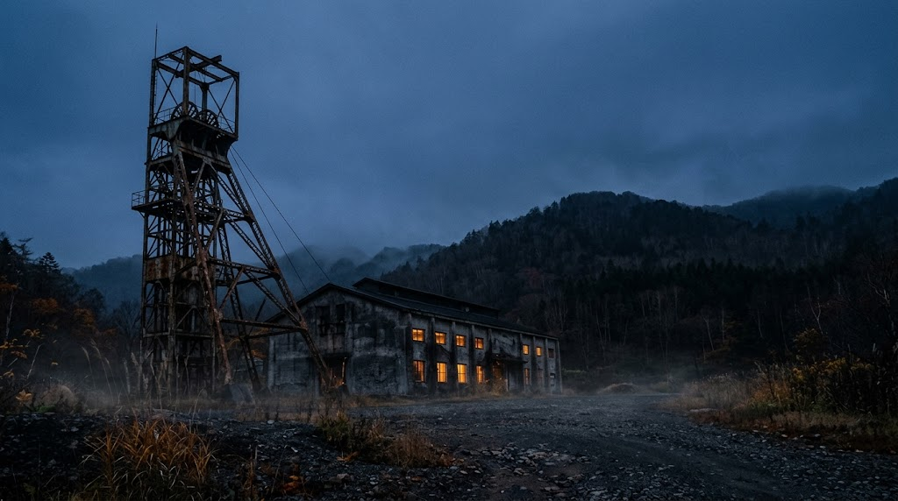
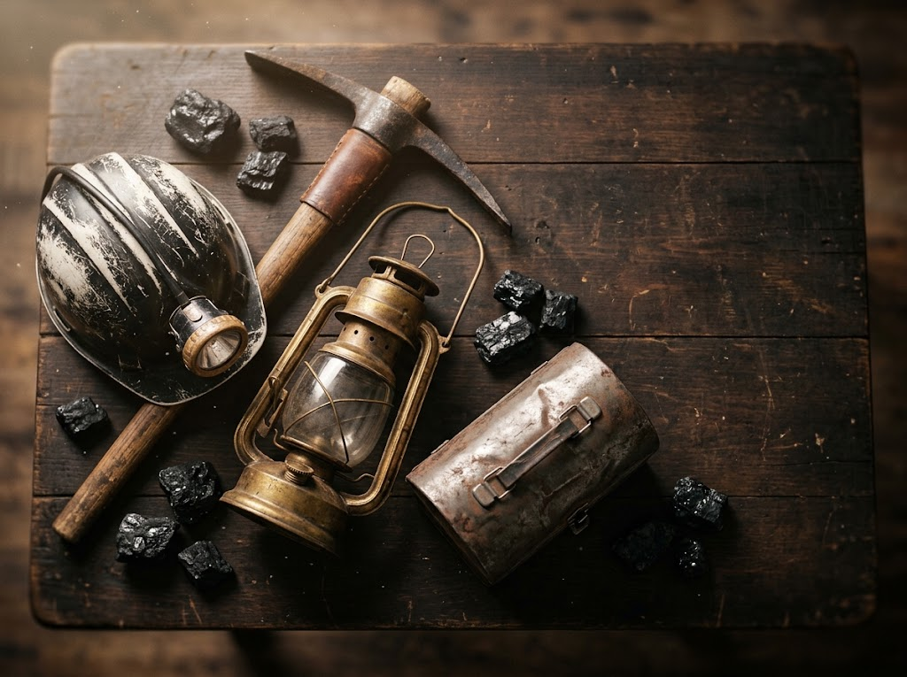
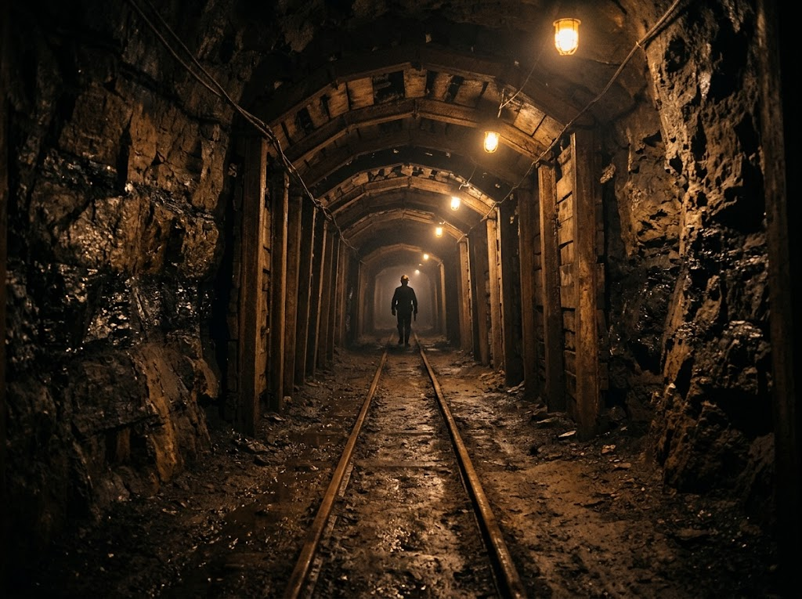

★★★★
夕張の栄枯衰退がわかる石炭博物館
「バリバリ夕張」このフレーズが頭に残っている。約30年ぶりに「元石炭の歴史村」に訪れた！博物館に到着するまでめちゃくちゃ廃墟(||゜Д゜)笑
実際に使用された坑道の中を見学できる日本唯一の「模擬立坑」が有名です。ここだけでも見る価値アリ！！
夕張の歴史や炭鉱のことを詳しく知ることができる貴重な施設。

夕張市石炭博物館は、かつて北海道の基幹産業だった石炭の歴史と、炭鉱で生きた人々の暮らしを今に伝える博物館です。
夕張市高松7番地
1970年に開設された夕張市郷土資料館を前身に、石炭の歴史村の中核施設として1980年7月に開館しました。目的は、北海道の基幹産業であった石炭産業の歴史と、炭鉱で生きた人々の生活文化を保存し、広く伝えることです。
旧北炭夕張炭鉱の採炭現場を模した模擬坑道は、実際の石炭層に接した坑道そのもの。世界でも珍しい貴重な資料として、いまも多くの人を迎えています。

発展の歴史、技術革新、町の成り立ちを、貴重な写真パネルや資料、生活用品で紹介。リアルなマネキンや作業風景のジオラマが、炭鉱労働の実態と炭鉱町の暮らしを分かりやすく伝えます。

エレベーターで地下展示場へ進むと、本物の坑道をそのまま使った探検コースが続きます。石炭層、掘削機械、人力作業の移り変わりを間近に見学できる、この館最大の体験です。
「バリバリ夕張」このフレーズが頭に残っている。約30年ぶりに「元石炭の歴史村」に訪れた！博物館に到着するまでめちゃくちゃ廃墟(||゜Д゜)笑
実際に使用された坑道の中を見学できる日本唯一の「模擬立坑」が有名です。ここだけでも見る価値アリ！！
夕張の歴史や炭鉱のことを詳しく知ることができる貴重な施設。
夕張炭鉱跡に開設された博物館。実際に採掘していた坑道をそのまま展示施設にしていて（施設内では「模擬坑道」と呼ばれる）臨場感もとてもあった。ぶっちゃけ佐渡金山の坑道よりもこっちのほうが内容も濃くて面白かった。坑道に続くエレベーターも通常稼働版と当時の坑道エレベータ模したゆっくり真っ暗稼働版の2基用意されているのも芸が細かい。
あと解説員さんの解説はぜひ聞いてみるとよいでしょう。模擬坑道の説明聞くと解像度がめっちゃ上がります。（なんせ模擬坑道、ちょっと前に火災で埋めた坑道を再発掘して展示しているので）
アクセス、Googleマップのナビで来るともしかしたら道道38の何もないところで案内終了になる恐れがあるので注意（自分がそうだった）正解ルートは南側の「夕張市石炭博物館」ののぼりと看板のある交差点を入って奥に進むのが正解。道路入った先と駐車場は夕張市らしくちょっと荒れ気味ですが一応舗装はされています。
お出かけ前に、公式サイトで最新の開館状況をご確認ください。
ナビによっては、道道38号の途中で案内が終わることがあります。南側の「夕張市石炭博物館」ののぼりと看板のある交差点から入り、奥へ進んでください。